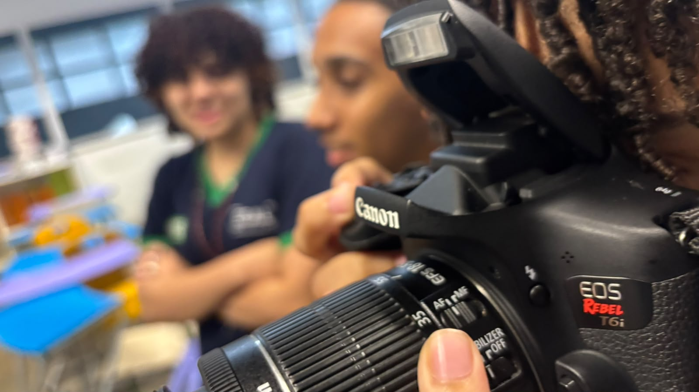
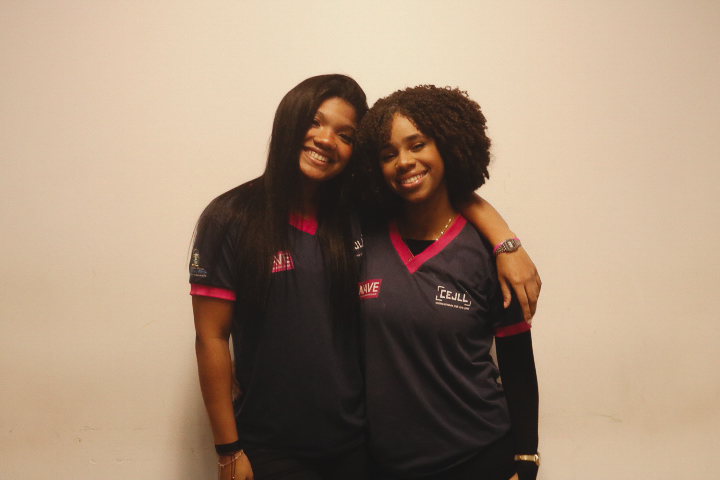
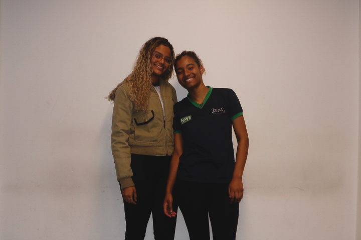

FOTOGRAFIA ESTUDANTIL • NAVE
Cada olhar conta uma história.
Um espaço dedicado à valorização da fotografia e da criatividade dos estudantes da Escola Técnica Estadual José Leite Lopes (NAVE). Descubra registros, projetos e diferentes perspectivas através do olhar dos alunos.
Explorar galeria →
A criatividade também merece ser vista.
O Analeth Photoart reúne fotografias desenvolvidas por estudantes do NAVE, dando visibilidade às produções artísticas, experiências e histórias registradas dentro e fora da escola.
CONHEÇA NOSSO ACERVO
Ver galeria →
Olhares em destaque


